USER GUIDE - CHORDFLOW
1. MAIN MENU
ChordFlow helps musicians organize setlists, edit songs, import chord sheets, and use the app comfortably during rehearsals or live performance.
Add Song: Start a new song from scratch.Import Songs: Bring songs in from files, pasted text, links, or OCR.Setlists: Open your song collections.Tuner: Access the built-in tuner.
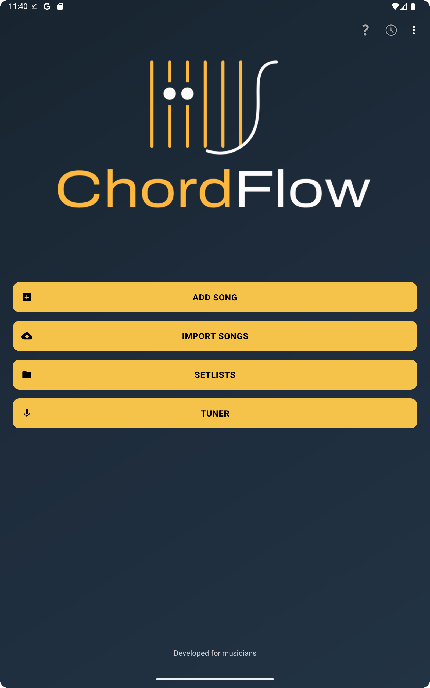
Main menu with the primary shortcuts for adding songs, importing content, opening setlists, and using the tuner.
2. SETLISTS
The setlists screen is where you manage your repertoires.
View all created setlists.
Tap the yellow + button to create a new setlist.
Open a setlist to see the songs inside it.
Long press a setlist to access extra actions such as deleting or exporting it.
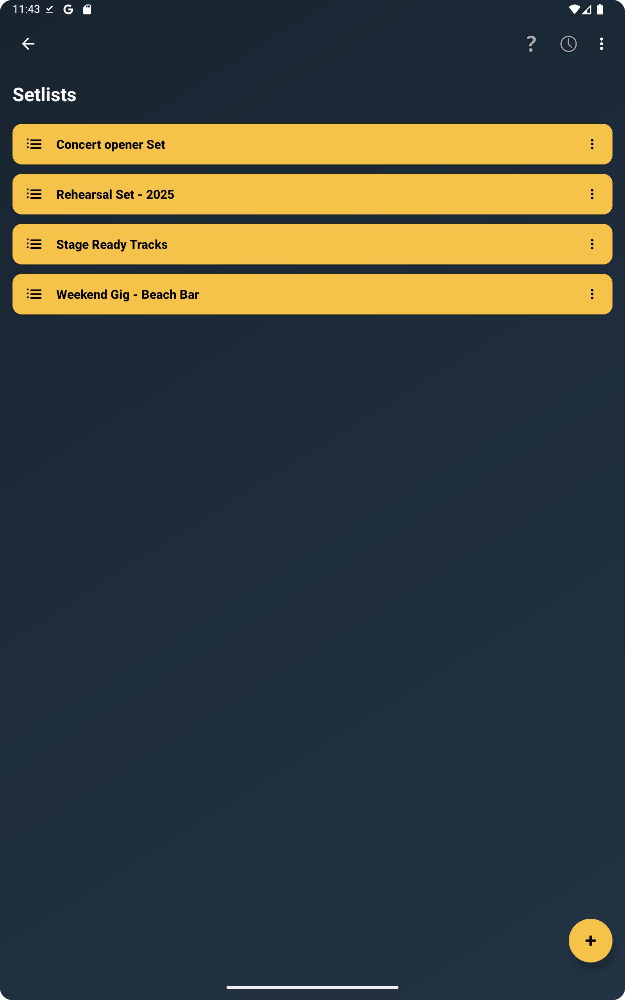
The setlists screen keeps your repertoires organized and easy to open on stage.
3. ADDING A SONG
From the main menu, tap Add Song to choose the format you want to create.
Add Chords by Section: For songs organized by intro, verse, chorus, bridge, and similar sections.Add Lyrics with Chords: For lyrics where the chord line appears directly above the words.
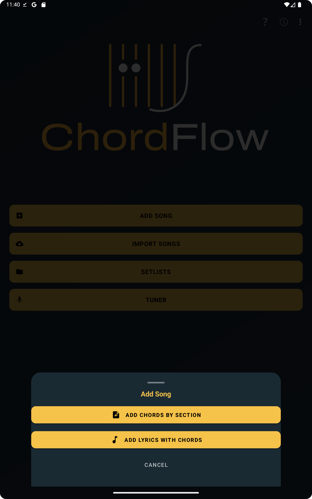
ChordFlow lets you choose between a structured section-based song and a lyrics-with-chords layout.
4. SONG EDIT SCREEN
Use the section-based editor when you want a clean stage view with named sections and chord blocks.
Enter the song title.
Set the original key, such as C, D, or Am.
Add sections like Intro, Verse, Chorus, or Bridge.
Long press existing sections later to edit or remove them.
Tap Save Song to store everything.
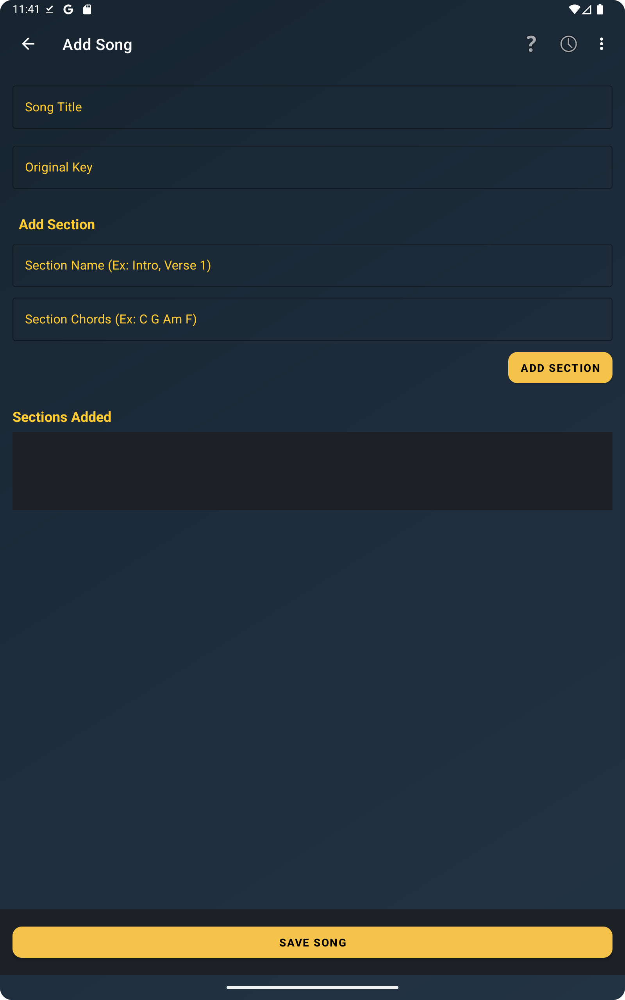
The section editor is ideal for building chord progressions by song part.
5. SONG DETAILS SCREEN
This is the main performance view, where ChordFlow shows the song ready to read and play.
Scroll vertically through the full song.
Pinch to zoom in or out.
Double tap to reset zoom.
Swipe from left to right to go back to the previous screen.
Tap Transpose to change the key instantly.
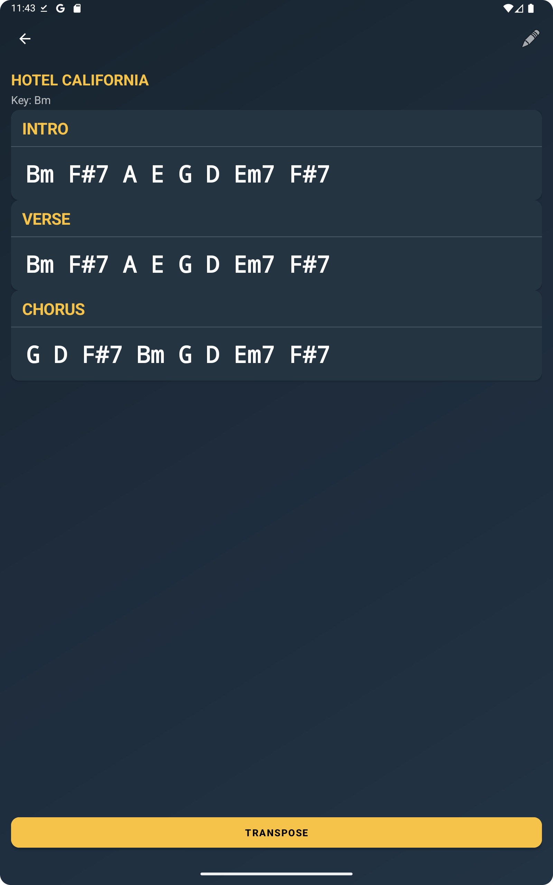
The song details screen shows sections and chords in a format designed for fast reading.
6. VIEW MODES
Inside the song view, you can switch between different visual layouts depending on your device and reading preference.
Auto view: Lets the app choose the best layout automatically.Classic view: Keeps the more traditional chord sheet appearance.Responsive view: Adjusts the layout for easier reading on different screen sizes.
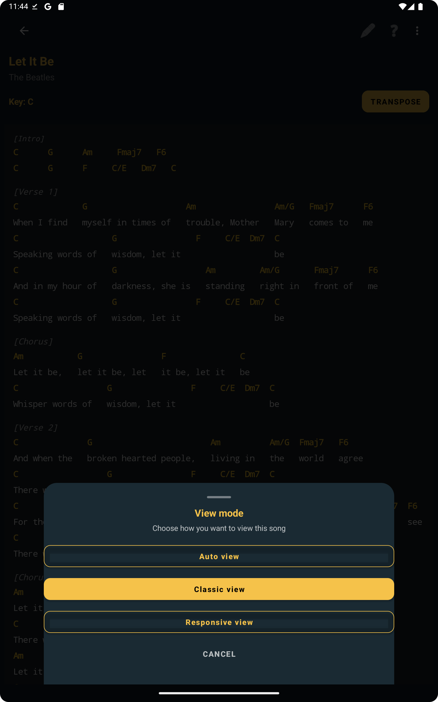
Switch view modes to make the song easier to read during practice or live use.
7. KEY TRANSPOSITION
ChordFlow can transpose songs for different singers, instruments, or capo positions.
Open a song in the details screen.
Tap the Transpose button.
Adjust the number of semitones.
Choose sharp or flat notation when available.
Apply the change and keep playing.
Transposition is especially useful when you need to adapt a song quickly without editing the original content.
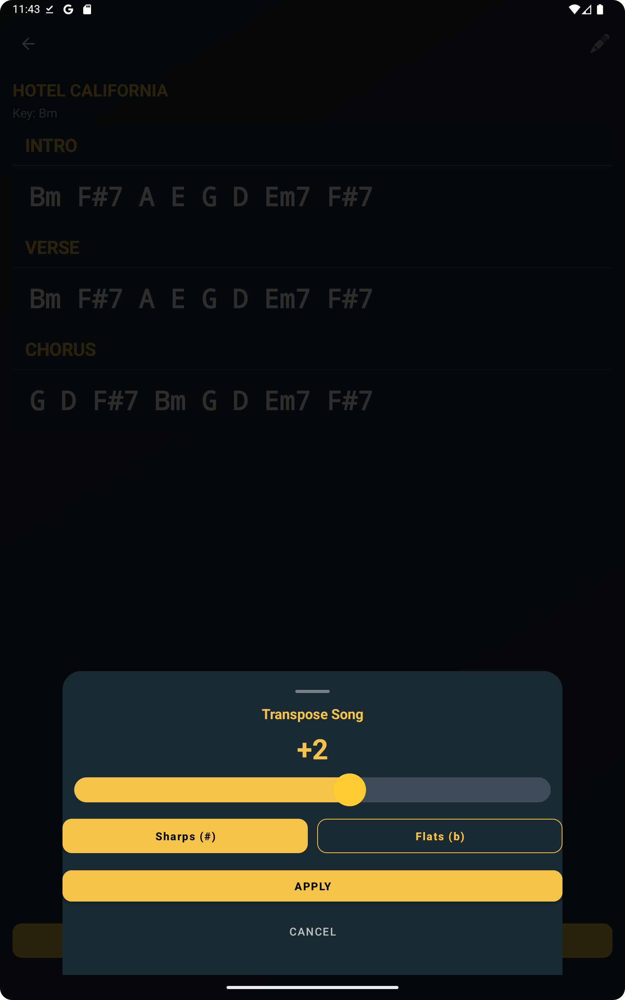
The transpose dialog lets you move the song key up or down in seconds.
8. SONGS WITH LYRICS AND CHORDS
ChordFlow also supports songs where the chord line is aligned directly above the lyrics.
Tap the + button or choose Add Song .
Select Add Lyrics with Chords .
Enter the title, artist, and song key.
Write chord lines starting with a dot ..
Use square brackets for sections, such as [Verse] or [Chorus].
Tap Save Song .
[Verse]
. C G Am F
Imagine there's no heaven
. C G Am F
It's easy if you try
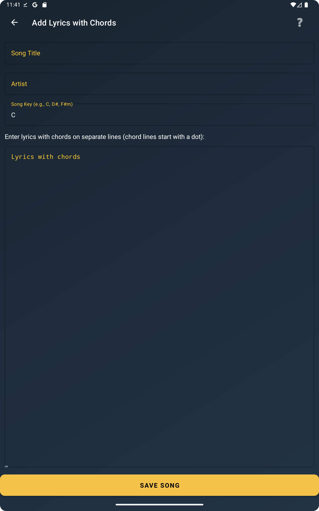
Editor for entering title, artist, key, and lyrics with chord lines.
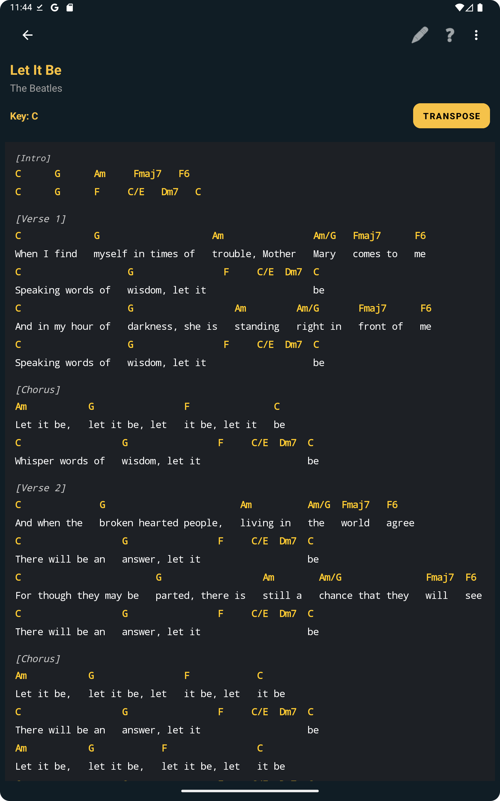
Finished lyrics-and-chords songs are displayed in a readable stage-friendly layout.
9. GUITAR AND PIANO CHORD VIEWER
When a chord is available in the viewer, ChordFlow can show its shape on guitar and its notes on piano.
Tap a chord in the song view to open the chord dialog.
Switch between the Guitar and Piano tabs.
Browse available voicings or inversions.
Use Listen Chord to hear the chord when supported.
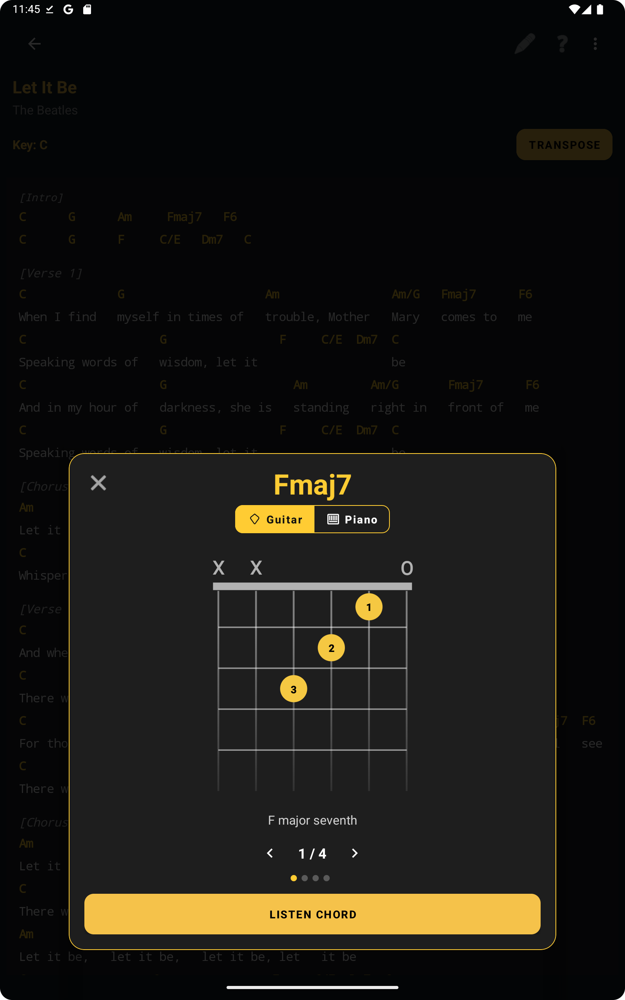
Chord viewer with a guitar diagram showing fingering positions.
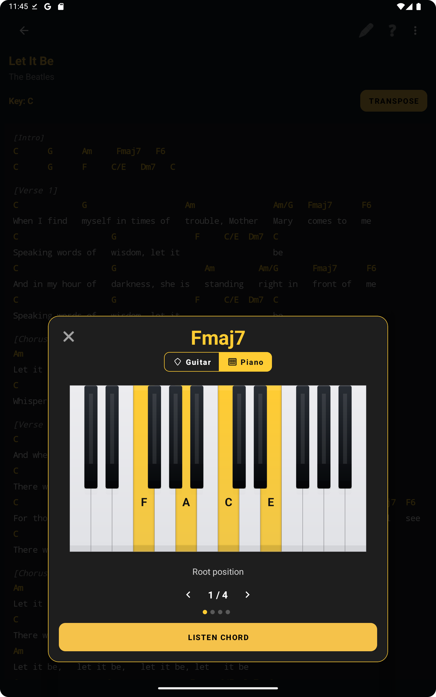
The same chord can also be visualized on piano, with the highlighted notes clearly marked.
10. IMPORTING SONGS
ChordFlow supports importing songs from files, pasted text, links, and image OCR, with a preview before saving.
In the main menu, select Import Songs .
Choose the import source.
Review the detected content.
Adjust title, artist, key, and format if needed.
Save the imported song into the correct setlist.
Import file
Paste chord sheet
Import from link
Import PDF
Import from image (OCR)
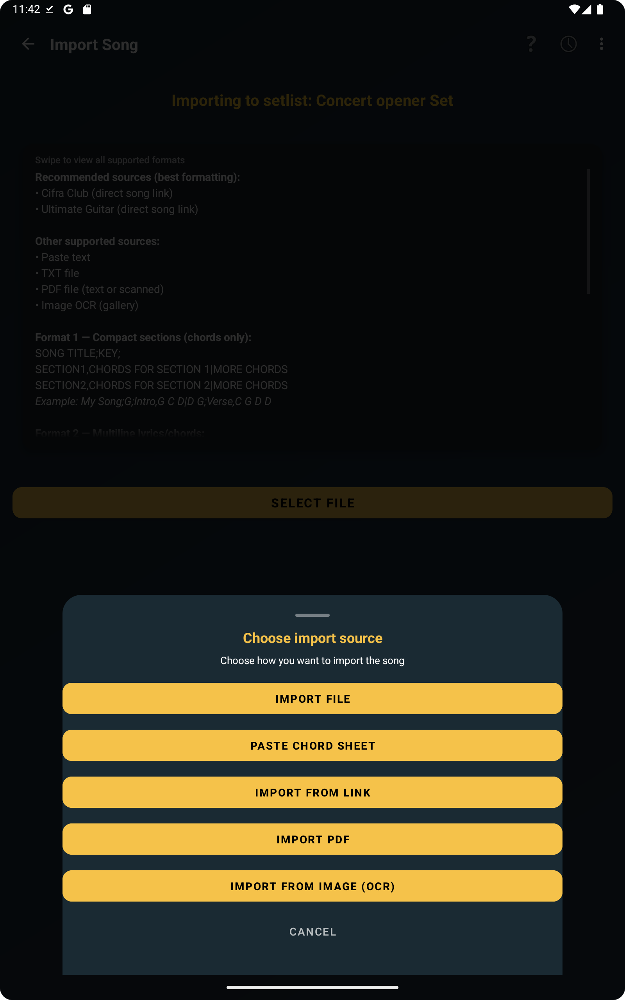
The import menu gathers all supported ways to bring songs into ChordFlow.
Examples of formats
TXT compact format: Separate songs with a blank line.
WONDERFUL TONIGHT;G;INTRO,G D C D G D C D|VERSE,G D C D G D C D|CHORUS,C D G Em C D G|
BOHEMIAN RHAPSODY;Bb;INTRO,Bbmaj7 Gm7 Cm7 F7|VERSE,Bbmaj7 Gm7 Cm7 F7|BRIDGE,Bbmaj7 Eb Bbmaj7 Eb|CHORUS,F7 Bbmaj7 Ebmaj7 Bbmaj7
TXT multiline format: Separate songs using the marker ===MUSIC_SEPARATOR===.
Hotel California (Dm)
Eagles
[Intro]
.Dm A7 C G A# F Gm A7
[Verse]
.Dm A7
On a dark desert highway...
...
===MUSIC_SEPARATOR===
Can't Help Falling in Love (G)
Elvis Presley
[Intro]
.G D Em C G D G
...
PDF: Works with selectable-text PDFs and scanned PDFs converted through OCR.
11. TIPS AND TRICKS
Use zoom on the song details screen to fit your needs.
Prevent screen timeout during rehearsals and performances.
Use swipe gestures to move quickly through your workflow.
Organize songs into themed setlists for faster access on stage.
12. FILE EXAMPLES
Try our song format examples. Download the files below and test the import feature in the ChordFlow app.
13. WINDOWS VERSION INSTALLATION
The Windows version of ChordFlow is distributed through an installer that simplifies setup. You may still see Windows Defender or SmartScreen warnings because the app is not signed with a commercial certificate.
Download the installer from the website.
If SmartScreen appears, click More info .
Then click Run anyway .
Follow the installation wizard.
After installation, ChordFlow will be available in the Windows Start menu.
Important: ChordFlow does not collect personal data and works fully offline.
You can also read our Privacy Policy for more information.
14. USING AI TO GENERATE FILES
You can speed up song preparation with tools like ChatGPT or Gemini . Ask the AI to generate songs in one of the formats recognized by ChordFlow, then import the file directly into the app.
For lyrics with chords:
Imagine (C)
For chord sections:
IMAGINE;C;INTRO,C F C F|VERSE,C F C F|CHORUS,F C G C